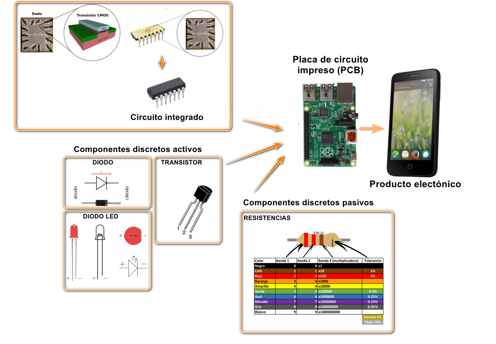
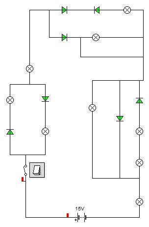

COMPONENTES DISCRETOS ACTIVOS: TRANSISTORES Y DIODOS --> SILICIO
Son los componentes electrónicos activos. Actualmente, se fabrican con materiales semiconductores, que tienen una conductividad eléctrica de valor intermedio entre los conductores (como la mayoría de los metales) y los aislantes (vidrio, madera, etc.).
El material semiconductor más utilizado es el Silicio, gracias a que tiene 4 electrones en su última capa de valencia. En el siguiente vídeo puedes ver cómo dopando al silicio puro conseguimos las capas que necesitamos para fabricar transistores de 3 capas (NPN ó PNP). Esto nos permite fabricar circuitos integrados con millones de transistores muy pequeños.
EL TRANSISTOR
El transistor es un dispositivo electrónico semiconductor utilizado para entregar una señal de salida en respuesta a una señal de entrada.
Cumple funciones de amplificador o conmutador. Amplificador amplificando señales o conmutador como si fuese un pequeño interruptor.
El término «transistor» es la contracción en inglés de transfer resistor («resistor de transferencia»).
Actualmente se encuentra prácticamente en todos los aparatos electrónicos de uso diario tales como radios, televisores, reproductores de audio y video, relojes de cuarzo, computadoras, lámparas fluorescentes, tomógrafos, teléfonos celulares, aunque casi siempre dentro de los llamados circuitos integrados.
En 1947 se inventó el primer transistor en los laboratorios Bell. En reconocimiento a este logro, tres físicos norteamericanos: Shockley, Bardeen y Brattain fueron galardonados conjuntamente con el Premio Nobel de Física de 1956 «por sus investigaciones sobre semiconductores y su descubrimiento del efecto transistor».
Los primeros transistores no estaban integrados eran componentes discretos, tienen 3 capas (NPN o PNP) y tienen también tres pasillas (Base, Colector y Emisor).

DIODO
El diodo es un dispositivo electrónico semiconductor formado por la unión de un materia semiconductor del tipo P (ánodo) y otro tipo N (cátodo).

Si se conecta la zona P al positivo y la zona N al negativo, se dice entonces que la unión P-N se comporta en este caso como un diodo en polarización directa, dejando pasar la corriente (funcionaría como un interruptor cerrado). En caso contrario, se habla de polarización inversa, y la corriente no circulará.

Para entender mejor qué son los diodos, vamos a estudiar en clase este circuito y veremos qué bombilla se enciende y cual no.

PCB: Placas de Circuito Impresas
P.C.B. son las siglas de Printed Circuit Board o placa de circuito impreso. Es el formato más habitual en el que encontraremos los circuitos analógicos y digitales comerciales.
Un PCB consiste básicamente en una placa de baquelita sobre la que se trazan unas líneas de cobre (pistas), que actúan como conductores. Al final de las pistas se realizan unos agujeros, en los que se insertan las patillas de dichos componentes. Para fijar los componentes a la placa, se utiliza soldadura con estaño.

Tecnología SMT y componentes SMD
La tecnología SMT (Surface-Mounted Technology, o Tecnología de Montaje de Superficie) consiste en disponer los componentes sobre la superficie del circuito impreso, y soldarlos sobre él sin realizar agujeros pasantes. Dichos componentes se llaman SMD (Surface-Mount Devices).
Además de evitar el taladrado (y posible deterioro) de la placa, se consigue también construir los componentes con un menor tamaño, aumentando lo que se conoce como integración: se introducen, en el mismo espacio, más componentes.
A continuación, pueden verse algunas resistencias con tecnología SMD: